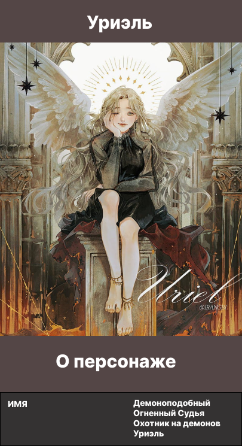

Описание
Уриэль, более известная под своим модификатором созвездия Демоноподобный Огненный Судья, является архангелом туманности Эдем, которая стоит на стороне Абсолютного Добра. Она является давним сторонником Ким Докча и Ю Джунхёк, а также спонсором Чон Хивон. После смерти Метатрона она становится лидером Эдема.
Уриэль — прекрасный ангел, напоминающий маленького демона.
Она описана как миниатюрная, с длинными волнистыми платиновыми волосами, которые ей нравится носить наполовину поднятыми, наполовину распущенными.
Ее глаза изумрудно-зеленые. Перья на ее крыльях белые. Она любит носить открытые, оборчатые и/или кружевные черные платья.
Она не часто носит обувь и любит носить браслеты и ножные браслеты. Она пахнет сладко и свежо. Когда Докча впервые видит ее, он находит ее голос милым.
В формальной одежде Эдема она носит униформу Эдем с серьгами-крестами, выглядя элегантно и благородно.
В своей Истинной форме она носит корону с малиново-красным рубином.
Внешний вид